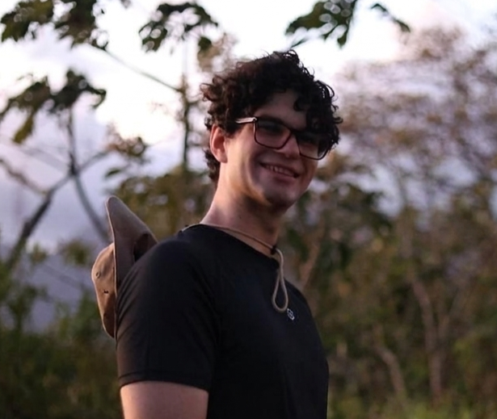

Jul. 2025 — Present
Santiago, Panama
Python Developer & IT Support
Grupo Saleta
Development of business solutions using Python and Odoo. Administration and technical support of the organization's IT systems.
Systems and Computer Engineering — Universidad Tecnológica de Panamá
🇵🇦 Panama · 🇮🇹 Italy
Member of the ROBOTSIS research group. I work at the intersection of artificial intelligence, robotics, and the exact sciences, with a focus on applying computational methods to scientific research problems.

My work to date has focused on applying artificial intelligence and machine learning techniques to physical and biological systems: from deep neural networks for anomaly detection to the integration of biosensors in robotic assistance systems.
My long-term interest lies in the computational modeling of physical phenomena, the simulation of complex systems, and the use of machine learning as a tool for scientific inquiry in physics and related fields. I am particularly drawn to problems where software engineering and mathematics converge with fundamental scientific questions.
Design, implementation, and evaluation of a low-cost exoskeleton prototype for upper-limb assistance in patients with monoplegia. The work integrates EMG sensors for neuromuscular signal acquisition and was developed in collaboration with the Centre for Automation and Robotics at the Universidad Politécnica de Madrid.
DOI: 10.1109/AmITIC60194.2023.10366352A deepfake detection system based on convolutional neural networks, capable of identifying forged identities in images. Derived from the project presented as a finalist at the UTP Scientific Initiation Conference 2023.
An expert system for the early diagnosis of fungal diseases in Panamanian fruit crops, built on inference rules derived from local agronomic knowledge.
View on ResearchGateFull academic profile: orcid.org/0009-0004-4290-2181
Development of business solutions using Python and Odoo. Administration and technical support of the organization's IT systems.
Participated in the assembly, calibration, and testing of LuxBit, an advanced upper-limb exoskeleton. Investigated the integration of EMG sensors as a biomechanical control interface. Presented the work to visiting academic delegations. This experience led to the publication indexed in IEEE Xplore (AmITIC 2023).
QA testing of digital forms for public institutions during the COVID-19 pandemic. Contributed to the early stages of the national vaccination registry.
GPA: 2.55 / 3.00. Member of the ROBOTSIS research group (Robotics, Intelligent Systems and Simulation). Publication indexed in IEEE Xplore. Finalist in multiple research and software development competitions. Taught an introductory Python programming course for students and professionals. Mentored a primary school team in a local robotics competition.
Personal projects oriented toward simulation and computational mathematics.
2D n-body simulation under Newton's Law of Universal Gravitation. Each body exerts gravitational attraction on all others; trajectories are numerically integrated step by step.
Generation of the Sierpiński fractal using the chaos game algorithm. An exploration of self-similarity and fractal geometry.
Real-time rendering of a rotating torus using ASCII characters. Direct implementation of 3D→2D projection and a diffuse shading model, without any graphics libraries.
DC motor speed control via an analog potentiometer signal. An introduction to embedded programming and physical actuator control.
Deepfake detection using deep learning.
Eonfolk: a web encyclopedia with 3D models of Panamanian cultural heritage.
Expert system for fungal disease diagnosis in fruit crops.
Digitization of processes in Panamanian public facilities.
Python · Pandas / NumPy · TensorFlow / Keras · C / C++ · Arduino · SQL · Odoo · Embedded programming
Spanish (native) · English (advanced)
Open to conversations about graduate programs, research fellowships, and academic collaborations.